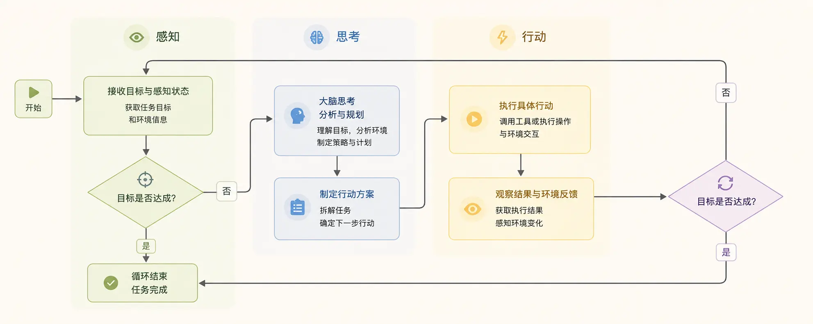
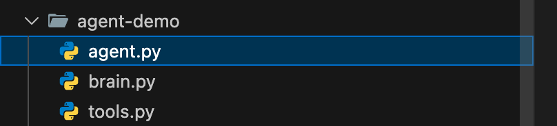

Python で AI Agent を実装
コードの詳細に入る前に、まず明確な認識を築きましょう。AI Agent は次のようにイメージできます。頭脳と手足を持つインテリジェントなプログラム。
- 頭脳（中核）：それは理解・推論・意思決定を行うモデル（例：大規模言語モデル LLM）。情報を処理し、計画を立てる役割を担います。
- 知覚（入力）：Agent は感覚を通じて外部情報を取得します。例：ユーザーの指示、データベースの問い合わせ結果、Web ページの内容、センサーデータなど。
- 行動（出力）：Agent は手足を通じて外部の世界に影響を与えます。例：関数の呼び出し、メールの送信、画面へのテキスト出力、ロボットアームの制御など。
- 目標：Agent のすべての行動は、明確な目標を中心に展開されます。例：「北京の明日の天気を調べてください。」
その中核となるワークフローは、古典的な知覚→思考→行動ループです。下図の通りです：

簡単なテストケース
agent-demo/ agent.py # 主实现（下面给出） tools.py # 工具实现（可单独文件） memory.py # 简单记忆实现（可单独文件） README.md
実例
agent.py - 極めてシンプルな AI Agent プロトタイプ（そのまま実行可能）
説明：
- LLM 部分は非常に簡単な「ルール応答器」で模擬しています。実際に LLM を接続するときは LLMInterface.generate(...) を置き換えてください。
- 構成要素：LLM 抽象、頭脳（解析/意思決定）、プランナー、ツール登録器、メモリ、実行器
"""
from typing import Any, Dict, List, Callable
import time
# -----------------------------
# Memory（非常轻量）
# -----------------------------
class Memory:
def __init__(self):
self.short = {} # 当前会话上下文
self.long = {} # 长期偏好/联系人等
def get_short(self, k, default=None):
return self.short.get(k, default)
def set_short(self, k, v):
self.short[k] = v
def get_long(self, k, default=None):
return self.long.get(k, default)
def set_long(self, k, v):
self.long[k] = v
# -----------------------------
# LLM 抽象（替换点）
# -----------------------------
class LLMInterface:
def generate(self, prompt: str) -> str:
"""
ここでは、非常にシンプルなルール式の模擬応答器を示します。
実際に使用する場合：OpenAI/その他のモデルを呼び出すコードに置き換え、model のテキストを返してください。
"""
# 极简解析示例：识别是否需要判断"下雨"
if "是否下雨" in prompt or "下雨" in prompt:
return "请先查询天气；如果有雨，请生成提醒并发送给目标联系人。"
if "生成提醒" in prompt:
return "请提醒小王：明天北京有雨，请带伞。"
return "我理解了。"
# -----------------------------
# 工具注册与模拟工具
# -----------------------------
class ToolRegistry:
def __init__(self):
self.tools: Dict[str, Callable[..., Any]] = {}
def register(self, name: str, fn: Callable[..., Any]):
self.tools[name] = fn
def call(self, name: str, *args, **kwargs):
if name not in self.tools:
raise ValueError(f"工具未注册: {name}")
return self.tools[name](*args, **kwargs)
# 模拟工具：天气查询（真实情况会调用天气 API）
def mock_weather_api(city: str, date: str) -> Dict[str, Any]:
# 简单规则：如果 city 包含 "北京" 且 date 包含 "明天"，返回下雨示例
if "北京" in city and "明天" in date:
return {"city": city, "date": date, "cond": "雨", "precip_mm": 5}
return {"city": city, "date": date, "cond": "晴", "precip_mm": 0}
# 模拟工具：发送消息（真实情况会调用短信/邮件/企业微信等）
def mock_send_message(contact: str, message: str) -> bool:
print(f"[发送消息] to={contact} message={message}")
return True
# 模拟工具：简单搜索（示意）
def mock_search(query: str) -> str:
return f"模拟搜索结果：关于 `{query}` 的信息摘要。"
# -----------------------------
# Planner / Executor
# -----------------------------
class SimplePlanner:
def plan(self, goal: str) -> List[Dict[str, Any]]:
"""
目標をステップのリストに分解します（非常に簡略化した実装）
各ステップには、action（ツール名または内部アクション）と params が含まれます。
"""
steps = []
# 例：若提示包含"天气"，生成两个步骤：查天气、判断并可能发提醒
if "天气" in goal or "下雨" in goal:
steps.append({"action": "query_weather", "params": {"city": "北京", "date": "明天"}})
steps.append({"action": "decide_and_notify", "params": {"contact_name": "小王"}})
else:
steps.append({"action": "search", "params": {"query": goal}})
return steps
class Executor:
def __init__(self, tools: ToolRegistry, memory: Memory, llm: LLMInterface):
self.tools = tools
self.memory = memory
self.llm = llm
def run_step(self, step: Dict[str, Any]):
action = step["action"]
params = step.get("params", {})
if action == "query_weather":
res = self.tools.call("weather", params["city"], params["date"])
self.memory.set_short("last_weather", res)
return res
if action == "decide_and_notify":
weather = self.memory.get_short("last_weather", {})
# 简单规则决策
if weather.get("cond") == "雨":
# 让 LLM 生成提醒文本（示例）
prompt = f"基于天气信息：{weather}，生成一条发给{params['contact_name']}的提醒。"
reminder = self.llm.generate(prompt)
# 从长期记忆中获取联系方式
contact = self.memory.get_long(params["contact_name"]) or "13800000000"
ok = self.tools.call("send_message", contact, reminder)
return {"notified": ok, "message": reminder}
else:
return {"notified": False, "reason": "天气晴朗"}
if action == "search":
return self.tools.call("search", params["query"])
raise ValueError(f"未知动作: {action}")
# -----------------------------
# Agent 本体
# -----------------------------
class SimpleAgent:
def __init__(self):
self.memory = Memory()
self.tools = ToolRegistry()
self.llm = LLMInterface()
self.planner = SimplePlanner()
self.executor = Executor(self.tools, self.memory, self.llm)
# 注册默认工具
self.tools.register("weather", mock_weather_api)
self.tools.register("send_message", mock_send_message)
self.tools.register("search", mock_search)
# 假设长期记忆里存了小王的联系方式
self.memory.set_long("小王", "13911112222")
def handle(self, user_prompt: str):
# 1) 大脑解析（用 LLM 抽象）
intent = self.llm.generate(user_prompt)
# 2) 规划
steps = self.planner.plan(user_prompt)
# 3) 逐步执行
results = []
for step in steps:
r = self.executor.run_step(step)
results.append({"step": step, "result": r})
# 4) 输出合并
return {"intent": intent, "steps": results}
# -----------------------------
# 运行示例
# -----------------------------
if __name__ == "__main__":
agent = SimpleAgent()
task = "查一下明天北京的天气，如果下雨，帮我写个提醒并发给小王。"
out = agent.handle(task)
import json
print(json.dumps(out, ensure_ascii=False, indent=2))
説明：
- LLM 抽象：
LLMInterface.generate()は置き換え可能なポイントです。ここを OpenAI、Claude、またはローカル LLM に接続するコードに変更すれば OK です。 - プランナー（Planner）：自然言語の目標を順序付けられたステップに分解します。入門者はルールやテンプレートを使い、上級者は LLM にステップを出力させてアクションへ解析できます。
- ツール層（Tools）：各ツールは独立した関数で、一元的に
ToolRegistry登録されます。実際のプロジェクトでは、HTTP リクエスト、SDK 呼び出し、データベースの読み書きなどが該当します。 - メモリ（Memory）：短期/長期を区別します。短期は現在のタスクの中間結果に、長期は連絡先や好みなどに使用します。
- 実行器（Executor）：ステップをツール呼び出しにマッピングし、戻り値、失敗、リトライのロジックを処理します。
最初の AI Agent を構築：タスク計画アシスタント
私たちはタスク計画アシスタントを構築します。その目標は、ユーザーから与えられた複雑なタスク（例：「旅行に行きたい」）を、自動的に一連の順序付けられた実行可能な具体的なステップに分解することです。
ディレクトリ構造は以下の通りです：

ステップ1：インテリジェントな頭脳を構築する
Agent の頭脳には推論能力が必要です。ここでは OpenAI の GPT モデル（API 呼び出し経由）を Agent の頭脳として使用します。
OpenAI API キーを用意する必要があります。DeepSeek の API key も使用でき、互換性があります。
この章のテスト例では DeepSeek の API key を使用しています。まずhttps://platform.deepseek.com/api_keys申請してください。
また、百炼と方舟の Coding Plan プランを直接利用することもできます：https://www.runoob.com/claude-code/coding-plan.html。
まず、必要なライブラリをインストールします：
pip3 install openai
以下のコードで実行が成功するかテストできます：
実例
from openai import OpenAI
DEEPSEEK_API_KEY = "sk-xxxxxxx" # 这里设置你申请的 key
DEEPSEEK_API_URL = "https://api.deepseek.com/v1"
client = OpenAI(
api_key = DEEPSEEK_API_KEY,
base_url = DEEPSEEK_API_URL)
response = client.chat.completions.create(
model="deepseek-v4-flash",
messages=[
{"role": "system", "content": "You are a helpful assistant"},
{"role": "user", "content": "Hello"},
],
stream=False
)
print(response.choices[0].message.content)
インストールと設定が成功すると、次のような内容が出力されます：
Hello! How can I assist you today?
次に、最もシンプルな頭脳モジュールを作成しましょう：
brain.py ファイルのコード
from openai import OpenAI
import os
DEEPSEEK_API_KEY = "sk-xxxxxxx" # 这里设置你申请的 key
DEEPSEEK_API_URL = "https://api.deepseek.com/v1"
client = OpenAI(
api_key = DEEPSEEK_API_KEY,
base_url = DEEPSEEK_API_URL)
class AgentBrain:
"""Agent 的大脑，负责思考与决策"""
def __init__(self, model="deepseek-v4-flash"):
self.model = model
def think(self, prompt):
"""核心思考函数：接收提示，返回模型的思考结果"""
try:
# 使用客户端调用 Chat Completions API（v1.x 版本写法）
response = client.chat.completions.create(
model=self.model,
messages=[{"role": "user", "content": prompt}],
temperature=0.5, # 控制创造性，越低越专注
max_tokens=500 # 控制回复长度
)
# 提取模型返回的文本内容（v1.x 版本属性路径变更）
reasoning = response.choices[0].message.content
return reasoning.strip()
except Exception as e:
return f"思考过程出错: {e}"
# 简单测试一下大脑是否工作
if __name__ == "__main__":
brain = AgentBrain()
test_prompt = "你好，请简单介绍一下你自己。"
print("测试提问：", test_prompt)
print("大脑回复：", brain.think(test_prompt))
上記のコードを実行すると、出力結果はおおよそ次のようになります：
测试提问： 你好，请简单介绍一下你自己。 大脑回复： 你好！我是DeepSeek，由深度求索公司创造的AI助手，很高兴认识你！😊 让我简单介绍一下自己： **我的特点：** **完全免费**：目前没有任何收费计划，你可以放心使用 **知识丰富**：知识截止到2024年7月，涵盖各个领域 **对话能力强**：支持128K上下文，可以进行长篇深入对话
コードの解説：
- 私たちは
AgentBrainLLM とのやり取りをカプセル化するクラスを作成しました。 thinkメソッドは中核であり、文字列をprompt（プロンプト）受け取り、それを GPT API に送信します。temperatureパラメータは重要です：0.5 に設定すると、Agent の創造性と安定性のバランスが取れ、計画タスクに適しています。- 最後にモデルが生成したテキストを返します。これが Agent の思考結果です。
ステップ2：手足を定義する：ツールとアクション
Agentには実行能力が必要です。そのために、いくつかの簡単なツール（関数）を定義して、実際に作業できるようにします。
tools.py ファイルのコード
import datetime
class AgentTools:
"""Agent が使用できるツール集合"""
@staticmethod
def search_web(query):
"""ネットワーク検索ツールのシミュレーション（ここでは模擬）"""
mock_results = {
"旅行先のおすすめ": "パリ、東京、モルディブ、雲南麗江...",
"北京の天気": "明日は晴れ、気温15-25°C、微風。",
"Python チュートリアル": "菜鸟教程（Runoob）などのウェブサイトを推奨します。"
}
for key, value in mock_results.items():
if key in query:
return f"[ネット検索] '{query}' に関する結果：{value}"
return f"[ネット検索] '{query}' の明確な情報が見つかりません。"
@staticmethod
def make_schedule(steps):
"""スケジュール計画を作成するツール"""
schedule = "生成されたスケジュール計画：\n"
for i, step in enumerate(steps, 1):
schedule += f"{i}. {step}\n"
return schedule
@staticmethod
def get_current_time():
"""現在時刻を取得するツール"""
now = datetime.datetime.now()
return f"[システム時刻] 現在：{now.strftime('%Y-%m-%d %H:%M:%S')}"
@staticmethod
def calculate(expression):
"""簡易計算機ツール（安全版、互換性の問題を修正）"""
try:
# 1. 不正な文字を厳格にフィルタリング（数字、基本演算子、括弧、スペースのみ許可）
allowed_chars = set("0123456789+-*/(). ")
if not all(c in allowed_chars for c in expression):
return "[計算機] 式に不正な文字が含まれているため、計算を拒否しました。"
# 2. 安全検証を簡素化：エラーが発生しやすい ast.walk ロジックを削除し、基本的な構文チェックに変更
# 先にスペースを置換し、空の式を避ける
clean_expr = expression.strip().replace(" ", "")
if not clean_expr:
return "[計算機] 式を空にすることはできません。"
# 3. 計算を安全に実行（組み込み関数を制限し、基本演算のみ保持）
# 安全なグローバル環境をカスタマイズし、基本的な数学演算のみ許可
safe_globals = {
'__builtins__': {},
'pow': pow,
'abs': abs
}
# eval を使用するが環境を厳格に制限し、不正な文字をフィルタリング済みのため、リスクを大幅に低減
result = eval(clean_expr, safe_globals)
return f"[計算機] {expression} = {result}"
except ZeroDivisionError:
return "[計算機] エラー：除数をゼロにすることはできません。"
except SyntaxError:
return "[計算機] 式の構文エラー（括弧の不一致、演算子の誤りなど）。"
except Exception as e:
return f"[計算機] 計算エラー: {str(e)}"
# ツールのテスト
if __name__ == "__main__":
print(AgentTools.search_web("北京の天気"))
print(AgentTools.get_current_time())
print(AgentTools.calculate("3 + 5 * 2")) # 正常な計算
print(AgentTools.calculate("10 / 0")) # ゼロ除算エラー
print(AgentTools.calculate("__import__('os').system('ls')")) # 不正な文字のフィルタリング
コード解析：
- 各
@staticmethodが Agent が呼び出せるツールを1つ定義しています。 search_web現時点では模擬であり、実際のシーンでは本物の検索 API を接続する必要があります。make_scheduleタスクリストを計画にフォーマットするために使用します。- 重要な安全上の注意：
calculateツール内のeval()関数は実際の製品では極めて危険であり、より安全な方法（例：ast.literal_eval）に置き換えるか、完全に削除する必要があります。ここでは Agent がどのように関数を呼び出すかを示すためだけのものです。
ステップ3：Agent を組み立てる：コアループを実装する
次に、脳とツールを組み立て、中核となる意思決定ループを実装します。シンプルなルールを設計します：脳にタスクに応じてどのツールを使用するかを決定させます。
実例
from brain import AgentBrain
from tools import AgentTools
class SimpleAgent:
"""シンプルなタスク計画 AI Agent"""
def __init__(self):
self.brain = AgentBrain()
# 静的ツールクラスはインスタンス化の必要なし
self.tools = AgentTools
# Agent が知っているツールリストとその説明を定義し、脳にプロンプトするために使用
self.tool_descriptions = """
以下のツールを使用できます：
1. 検索ツール：最新・未知の情報を取得する必要があるときに使用します。例：'検索 北京の天気'。
2. 計画ツール：複数のステップを計画にまとめる必要があるときに使用します。例：'計画を立てる [ステップ1，ステップ2]'。
3. 時刻ツール：現在時刻を知る必要があるときに使用します。命令は「時刻を取得」です。
4. 計算ツール：数学的計算を行う必要があるときに使用します。例：'計算 3+5*2'。
"""
def run(self, user_task):
"""Agent のメインループを実行"""
print(f"🎯 ユーザータスク: {user_task}")
print("=" * 40)
# ステップ1：知覚と初期思考
initial_prompt = f"""
あなたの役割はタスク計画アシスタントです。
{self.tool_descriptions}
ユーザーのタスク：{user_task}
以下の固定フォーマットに厳密に従って回答してください。余計な内容を追加しないでください：
思考：[タスクに何が必要かを簡単に分析]
ツール：[使用するツール名を選択。適切なものがなければ「なし」と書く]
指示：[そのツールに送信する具体的な指示内容]
"""
initial_response = self.brain.think(initial_prompt)
print("🧠 初期思考結果：")
print(initial_response)
print("-" * 20)
# ステップ2：思考結果を解析し、ツールと指示を抽出（ロバスト性の最適化）
lines = [line.strip() for line in initial_response.split('\n') if line.strip()]
tool_to_use = "なし"
tool_instruction = ""
for line in lines:
if line.startswith("思考："):
continue # 思考行をスキップ
elif line.startswith("ツール："):
tool_to_use = line.replace("ツール：", "").strip()
elif line.startswith("指示："):
tool_instruction = line.replace("指示：", "").strip()
# ステップ3：アクションを実行
result = self._use_tool(tool_to_use, tool_instruction)
print("🛠️ 実行結果：")
print(result)
print("=" * 40)
# ステップ4：結果を統合し、ユーザーにフィードバック
final_prompt = f"""
ユーザーの元のタスク：{user_task}
あなたは思考を行い、ツールを使用しました。
思考プロセス：{initial_response}
ツール実行結果：{result}
では、ユーザーへの完全な最終回答を生成してください。役立つ答えや計画を直接示し、自然で親しみやすい言葉にしてください。
"""
final_response = self.brain.think(final_prompt)
print("💡 ユーザーへの最終回答：")
print(final_response)
return final_response
def _use_tool(self, tool_name, instruction):
"""ツール名に応じて具体的なツール関数を呼び出す"""
# ツール名のマッチングを統一（大文字小文字・余分なスペースに対応）
tool_name = tool_name.strip()
if tool_name == "検索ツール":
return self.tools.search_web(instruction)
elif tool_name == "計画ツール":
# 中国語・英語のカンマ・括弧に対応し、空の指示を処理
if not instruction:
return "[計画ツール] 計画ステップが提供されていないため、スケジュールを生成できません。"
# 括弧を削除してステップを分割（[]/()/{} の括弧に対応）
clean_instr = instruction.strip('[](){}').strip()
# 中国語・英語のカンマ分割にも対応
steps = [s.strip() for s in clean_instr.replace('，', ',').split(',') if s.strip()]
return self.tools.make_schedule(steps)
elif tool_name == "時刻ツール":
return self.tools.get_current_time()
elif tool_name == "計算ツール":
return self.tools.calculate(instruction)
elif tool_name == "なし":
return "[システム] ツールを使用する必要はありません。ユーザーに直接回答してください。"
else:
return f"[システム] 未知のツール：{tool_name}、実行できません。"
# 私たちの Agent を実行！
if __name__ == "__main__":
print("🤖 SimpleAgent を起動中...")
my_agent = SimpleAgent()
# いくつかの異なるタスクをテスト
test_tasks = [
"旅行に行きたいので、何を準備すればいいか計画を立ててください",
"今何時ですか？",
"15の2乗に20の3分の1を足したらいくつになるか計算してください",
]
for task in test_tasks:
my_agent.run(task)
print("\n" + "#" * 50 + "\n")
コードを実行すると、次のような出力が得られます：
启动 SimpleAgent... 用户任务: 我想去旅行，帮我规划一下需要准备什么 ======================================== 初始思考结果： 思考：用户需要规划旅行前的准备工作。这是一个通用任务，不需要最新信息或计算，但需要将多个准备步骤整理成一个清晰的计划。 工具：计划工具 指令：制定计划 [1. 确定目的地和旅行时间，2. 预订交通票（机票/火车票）和住宿，3. 准备旅行证件（身份证、护照、签证等），4. 安排行程和景点门票，5. 打包行李（衣物、洗漱用品、药品、充电器等），6. 安排家中事务（宠物、植物、邮件等），7. 兑换货币或准备支付方式，8. 购买旅行保险] -------------------- 执行结果： ...
コード解析と実行フロー：
- 初期化：Agent は自身の脳（
AgentBrain）とツールボックス（AgentTools)。 - タスクを受け取る：
runメソッドを起動して受け取るuser_task（例：「旅行に行きたい」）。 - 思考段階：タスクとツールの説明を組み合わせて
initial_prompt、脳に送信します。脳が返したテキストには、選択した「ツール」とツールへの「指示」が含まれています。 - 行動段階：
_use_tool関数は脳の選択に基づいて、対応するツール関数を呼び出し、結果を返します。 - フィードバックと要約：元のタスク、思考プロセス、行動結果を再度脳に送信し、ユーザーにわかりやすい最終回答を生成させます。
このプログラムを実行すると、Agent がどのように段階的にタスクを分析し、ツールを選択し、実行して答えを出すかがわかります。
実践演習：Agent をアップグレードする
あなたはすでに動作する AI Agent を持っています！しかし、これはまだ出発点にすぎません。次の演習を行って、より強力にしましょう：
演習1：記憶機能を追加する
- 目標：Agent が会話履歴を記憶できるようにする。
- ヒント：
SimpleAgentクラスに1つのself.conversation_history = []リストを追加します。呼び出しのたびにbrain.thinkには、現在のプロンプトだけでなく、過去の履歴会話もコンテキストとして送信します。実行後、新しい対話ターン（ユーザー入力、AIの思考、ツール結果）を履歴リストに追加します。
演習2：自動ツール選択を実装する
- 目標：脳の応答を標準的な JSON 形式にして、プログラムが自動解析できるようにする。テキスト抽出に依存しない。
- ヒント：プロンプトを変更し、脳が必ず次のような
{"thought": "…"， "tool": "…"， "instruction": "…"}の JSON 文字列を返すように要求します。次にコード内でjson.loads()を使用して解析し、安定性と正確性を高めます。
演習3：新しいツールを追加する
- 目標：Agent が ToDo を処理できるようにする。
- ヒント：
AgentToolsクラスに追加todo_list = []と2つの新しいメソッド：add_todo(item)和show_todos()。ツールの説明で脳にこの新しいツールの存在を伝え、更新します_use_tool方法でそれを呼び出します。
まとめと展望
おめでとうございます！基本を備えた知覚-思考-行動ループのAIエージェントを正常に構築できました。重要なポイントを振り返りましょう：
- 中核概念：AIエージェント = 脳（LLM） + 知覚 + 行動 + 目標。
- 実装の鍵：
- 脳：APIを通じてLLM（GPTなど）を呼び出して推論を行います。
- ツール：具体的な能力を関数にカプセル化し、エージェントが呼び出せるようにします。
- ループ：コードロジックで思考、意思決定、実行を結びつけます。
これはAIエージェントの世界の氷山の一角にすぎません。産業レベルのフレームワーク、例えばLangChain、AutoGenはより強力なツール統合、メモリ管理、マルチエージェント協調などの機能を提供します。さらに深く探求するには、以下をお勧めします：
その他の拡張
クリックしてノートを共有
ノートはこの記事の内容を拡張したものである必要があります！
記事投稿は、こちらをクリック
登録招待コードの取得方法
ノートを共有する前にログインが必要です！
登録招待コードの取得方法